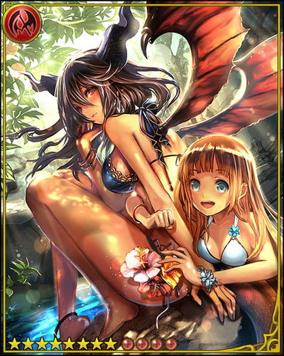
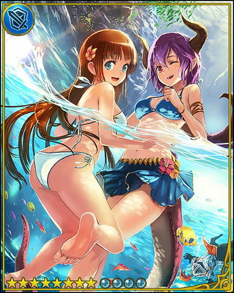
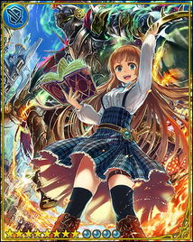
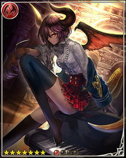

User:Morgan
From Rage of Bahamut WIKI
About Me
|  | Order : 龍宮城 ~ Dragon Palace ~ 龍宮城 Realm : Man Country : Germany Contact : Just contact me via Talk Page on this wiki.
Please use this referral code:
|
 |
|  | 
|

|
 |